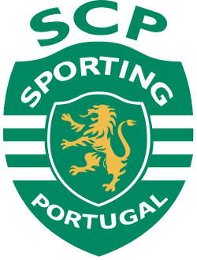

Attól még hogy nem támadó pozícióban játszott ahhoz képest voltak góljai amik nagyban segítették a csapat előrehaladsásá (lista a meccsekről amiben gólt lőttés nyertek vagy döntetlen lett) Sporting CP utlsó 10 meccsében kiemelkedően jól játszott, fontos és pontos passzok gól nem volt mivel eddig még csak középpályás volt de a nyújtott teljesítménye elég volt ahhoz hogy felfigyeljen rá az angol Manchester United csapat. (táblázat utcsó 10 meccsről)